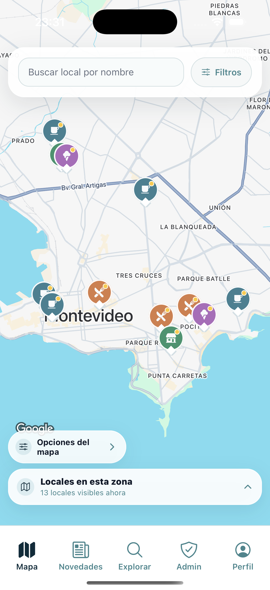
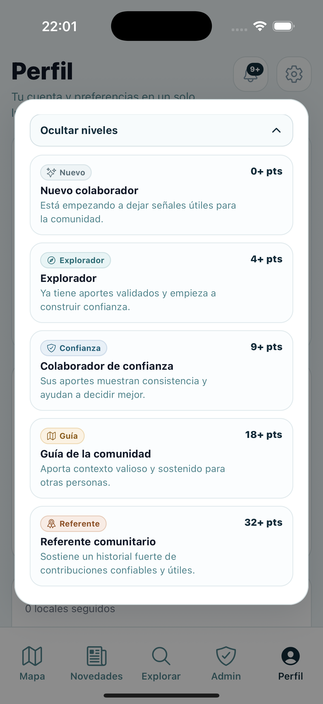

MAPA
Explorá locales con señales visuales claras.
Diferenciá tipos de lugares, mirá qué hay en cada zona y abrí el detalle de cada local sin perder contexto.
Galen UY
Desde el mapa hasta las reseñas y tu perfil de sensibilidad, Galen organiza señales clave para ayudarte a elegir con más confianza.

Diferenciá tipos de lugares, mirá qué hay en cada zona y abrí el detalle de cada local sin perder contexto.
Elegí tu nivel de cuidado para leer las reseñas y señales con un contexto más útil para vos.

Accedé a puntajes, contexto y reportes útiles en una sola vista, con foco en lo que realmente importa al momento de elegir.

Nuevos locales, reseñas y reportes ayudan a que más personas encuentren opciones con mejores referencias y menos incertidumbre.

MODO CUIDADO GALEN
Priorizá información útil, referencias confiables y señales más relevantes según el tipo de cuidado que necesitás.